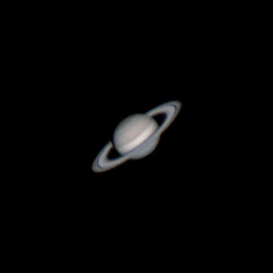

This is my blog, where I write articles in the topic of astrophotography

Have you ever hoped to capture the fascinating rings of Saturn? The first thing I want to say, is that it is possible! You will need a telescope, but if you have the patience, you won't need any... read more